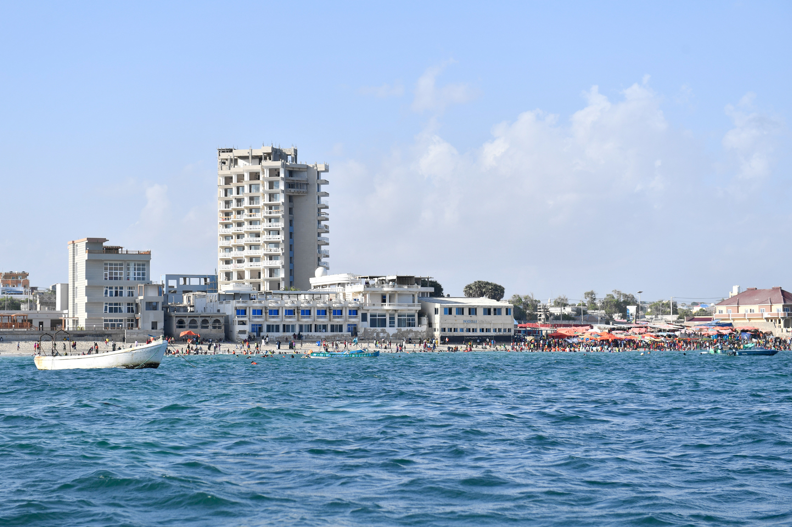
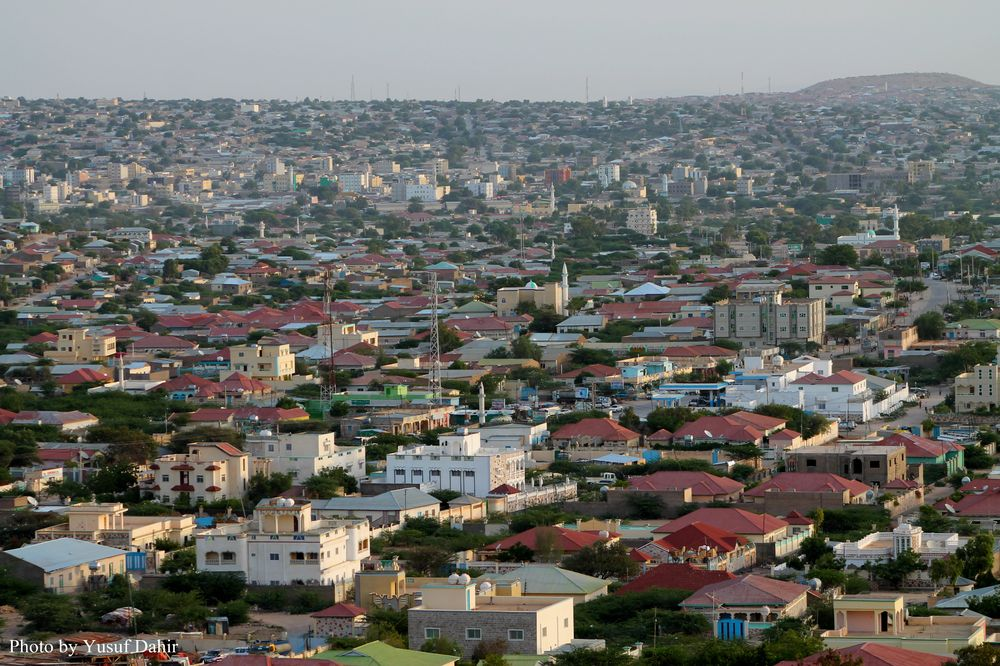

Major Cities

Mogadishu
The capital and largest city of Somalia, known for its beautiful beaches and historic architecture.

Hargeisa
Capital of Somaliland with vibrant markets and cool climate due to its high elevation.

Kismayo
Port city in southern Somalia known for its banana exports and beautiful coastline.